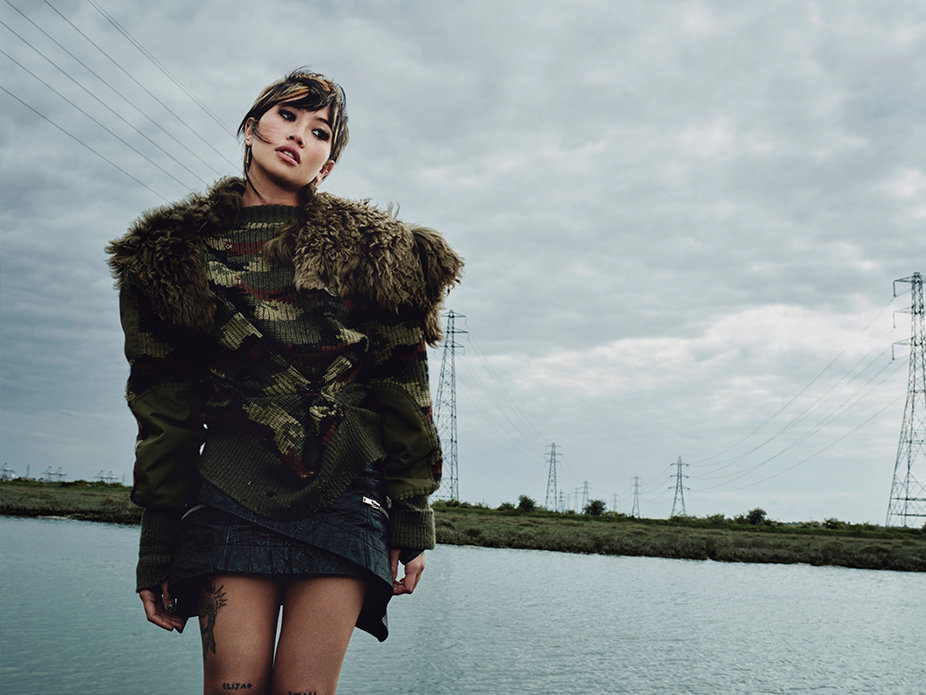
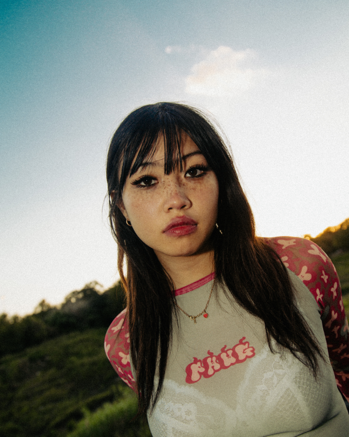

Glue Song
Beabadoobee
Beabadoobee
I've never known
someone like you, ooh Tangled in love
, stuck by you, from the glue
Don't forget to kiss me
or else you'll have to miss me
I guess I'm stuck forever by the glue,
oh, and you
Mm
Mm-mm-mm-mm
Mm-mm
Finding the right words
to use for this song
I have you in mind,
so it won't take so long
Never thought I'd find you, but
you're here, and so I love you
I'm not wrong when I say, "I've been stuck by the glue onto you"
I've been stuck by glue
Right onto you
I've been stuck by glue
I've never known
I've never known someone like you, ooh
I've never known
Producer
Jacob Bugden
Iain Berryman
Jacob Bugden
Iain Berryman

Beatrice Kristi ilejay Laus, otherwise known as beabadoobee is a Filipino-British singer and songwriter. Noticably known for her hit-song "Beaches," Beabadoobee has grown to become an icon in music industry
Beabadoobee
Jacob Bugden is an european guitarist, populary known for his role as the lead guitarist in Beadbdaoobee's band. He also produced Music with numerous other artists such as, slowthai, Haich Ber Na, etc.
Jacob Bugden
Jacob Bugden is an european guitarist, populary known for his role as the lead guitarist in Beadbdaoobee's band. He also produced Music with numerous other artists such as, slowthai, Haich Ber Na, etc.
Iain Berryman
▶︎